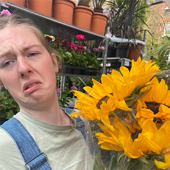

My name is Tamzin and I'm 18 years old. I'm born in London, England, but moved to Uppsala, Sweden when I was 1 year old. Altough since 3 months ago I've lived in Jönköping, Sweden.
I'm studying! More specifically I'm studying a bachelor program called New Media Design. How did I end up there? Well, I've known since highschool that I like graphic design, but I wanted to learn more techincal stuff like programming. Found this program that contained both and applied and got in! Yay! So now I'm here, finally learning to code!
Want to know more about Jönköping? Click here!
